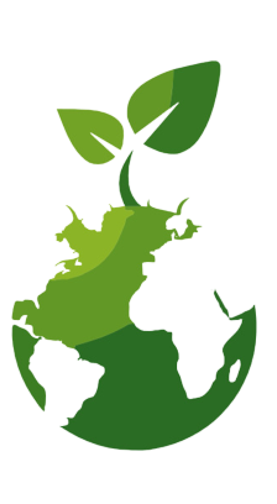

.
.

SUSTENTABILIDADE ECONÔMICA:
Não há uma definição totalmente precisa sobre sustentabilidade econômica apenas
aproximações e normas que devem
ser seguidas de acordo com o Plano de Gerenciamento de Resíduos Sólidos (PGRS), como
por exemplo: